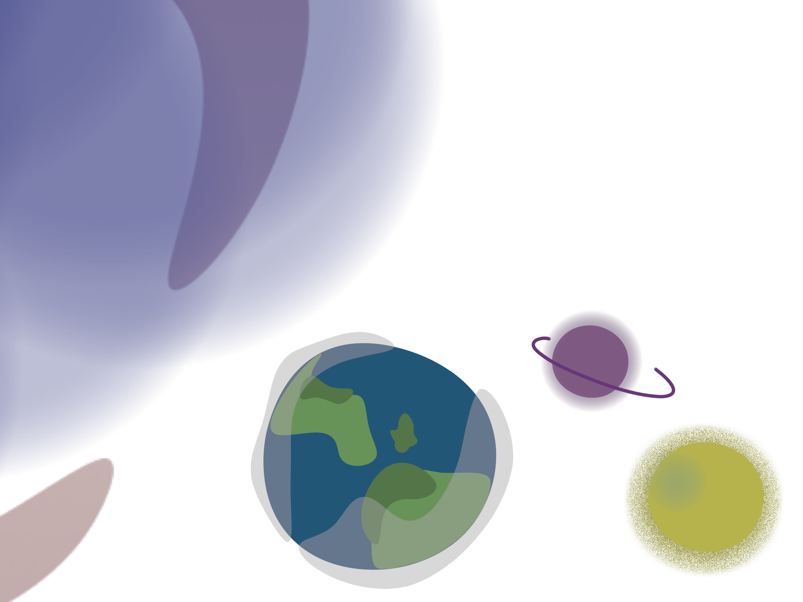

Planety… Wyglądają tak malutko… Wiemy o tym, że jest wiele planet na któ rych człowiek nie mó głby przeżyć. Więc jeśli nie człowiek, to kto na nich mieszka? Wyobraźmy sobie, że planet jest tyle ile włosów na głowie. To strasznie dużo! A i tak nie byłyby to wszystkie